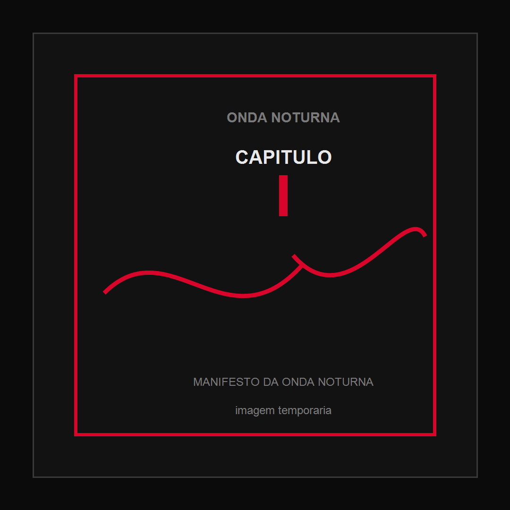

Quando a noite não significa silêncio
A noite ocupa um lugar especial na nossa imaginação. É durante a noite que muitas cidades revelam outras versões de si mesmas. As luzes mudam, os sons mudam, as pessoas mudam de lugar. Quem passou o dia trabalhando, estudando ou sobrevivendo encontra outros espaços para criar, conversar, tocar, aprender e imaginar. Mas a noite também é onde muita coisa permanece escondida. Existem artistas que criam sem visibilidade, projetos que sobrevivem sem apoio, comunidades inteiras que produzem cultura sem aparecer nos grandes palcos e pessoas que possuem talento, conhecimento e vontade de construir, mas não encontram acesso às ferramentas necessárias.
A Onda Noturna nasce olhando para essas zonas pouco iluminadas. Não porque acreditamos que a escuridão seja bonita por si mesma, mas porque sabemos que existem pessoas produzindo coisas importantes fora dos grandes refletores. A noite não é ausência de vida. A noite pulsa. Existem sinais atravessando a escuridão: pequenas frequências, conversas, bandas ensaiando, coletivos se organizando, pessoas aprendendo sozinhas, projetos independentes surgindo em quartos, garagens, centros culturais, ocupações, escolas, computadores antigos e espaços improvisados.
A Onda Noturna existe para ajudar essas frequências a se encontrarem. Somos uma organização independente que atua na interseção entre tecnologia, cultura, educação e comunidade. Queremos criar ferramentas, compartilhar conhecimento, fortalecer iniciativas, conectar pessoas, preservar informações e criar caminhos onde hoje existem barreiras.
Começamos próximos da música, da cena independente, do rock e das comunidades culturais porque foi ali que encontramos uma parte concreta dos problemas que queríamos compreender. Mas nosso horizonte nunca esteve limitado a um palco. A música ocupa um lugar importante na nossa história, mas a nossa ação cultural não termina nela. Queremos contribuir para comunidades mais conectadas, mais informadas e mais capazes de construir suas próprias soluções.
Porque acreditamos que, quando uma pessoa aprende, compartilha e ensina outra pessoa, alguma coisa se propaga. Uma ideia encontra outra ideia. Um projeto encontra outro projeto. Uma comunidade encontra uma ferramenta. E uma pequena vibração pode começar a atravessar distâncias.
É assim que uma onda se forma.